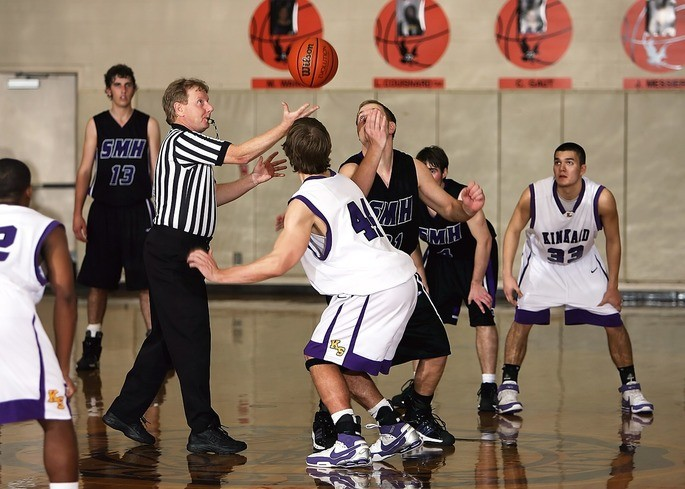

El básquettambién llamado baloncesto, es un deporte en el cual se enfrentan dos equipos de cinco integrantes.
Estos deben sumar puntos al introducir un balón en la canasta del equipo contrario.
A nivel internacional, el basquet sigue las normas de la FIBA (Federación Internacional de Baloncesto),
la cual establece reglamentos oficiales y organiza actividades para una gran cantidad de ligas.
Las reglas de la FIBA tienen algunas diferencias respecto de las estipuladas por la NBA y la NCAA, ligas
norteamericanas del basquetbol. A continuación te presentamos las reglas más importantes del baloncesto contemporáneo.
Las 20 reglas básicas del básquet actual
1. En el básquet dos equipos tienen que anotar puntos lanzando una pelota en la canasta del equipo rival.
2. Un equipo gana cuando anota más puntos que su oponente.
3. Los equipos están compuestos por un máximo de 12 jugadores. De los cuales habrá 5 en cancha,
pudiendo ser sustituidos por los de la banca.
4. La cancha de básquet es un rectángulo con una medida de 28 metros. En cada límite de ésta
habrá una canasta en la que se anotarán los puntos.
5. Un partido consta de 4 tiempos de 10 minutos cada uno.
6. Cuando hay un empate al final del juego, el partido continúa. Habrá prórrogas de 5 minutos
hasta que uno de los equipos tenga más puntos que el contrario.
7. El partido comienza con el salto en el centro de la cancha, en el que dos miembros de equipos
contrarios se disputan el balón.

8. Cada cesta del juego equivale a 2 puntos, excepto cuando el lanzamiento de la pelota se hace desde
detrás de la línea de 3 puntos.
9. Habrá cestas que cuenten 1 solo punto cuando el lanzamiento sea un tiro libre para cobrar una falta.
10. Una falta personal es la sanción sobre un jugador que ha hecho un contacto ilegal sobre los rivales.
Las faltas pueden ser defensivas u ofensivas.
11. Los jugadores pueden cometer hasta 5 faltas en un juego. A la sexta serán expulsados.
12. Cada equipo puede cometer hasta 4 faltas por cuarto. Luego de la quinta, el equipo oponente tendrá
derecho a dos tiros libres por cada falta recibida.
13. Un jugador no puede detener el drible (rebote de la pelota contra el suelo), tomar la pelota y
luego driblar otra vez. Es una infracción por "dobles"
14. El jugador que reciba la pelota en carrera solo puede dar hasta dos pasos antes de driblar. Entonces debe pasar el
balón o hacer un tiro a la canasta. Si da más de dos pasos, es una infracción por "pasos", o "caminata".
15. Los jugadores atacantes no pueden permanecer más de 3 segundos seguidos en el área restringida entre la línea de tiro libre
y la cesta. De hacerlo, se comete la infracción de "3 segundos".
16. Los equipos tienen 24 segundos para intentar cada tiro. Si no se logra lanzar en el tiempo estipulado por el reloj de posesión,
se producirá la "infracción por tiempo de tiro".
17. Si el mismo equipo hace un tiro, falla y obtiene el rebote ofensivo, no hay infracción y
se darán 14 segundos para hacer otro lanzamiento.
18. Una vez que un equipo tiene la pelota y pasa la línea de la mitad de la cancha, no puede cruzarla hacia atrás.
De retroceder así, habría una infracción por "zona" o "campo atrás".
19. El tiempo muerto es la interrupción del partido solicitada por un entrenador para dar direcciones a
sus jugadores por un minuto.
20. Cada equipo cuenta con 5 tiempos muertos durante el juego, y uno extra en caso de prórroga.
Las 13 reglas originales del básquet
El profesor de educación física, James Naismith, inventó el basquetbol a finales del siglo XIX y
escribió las 13 reglas originales de este deporte. Estas aparecieron publicadas en el periódico
"El Triángulo" del Springfield College, el 15 de enero de 1892, y eran:
1. La pelota puede ser lanzada en cualquier dirección con una o con las dos manos.
2. La pelota se puede palmear en cualquier dirección con una o ambas manos, pero nunca se golpeará con el puño.
3. Un jugador no puede correr con el balón. El jugador debe lanzarlo desde el lugar en que lo atrapa,
pero si viene en carrera, se le permitirán pasos si trata de detenerse.
4. La pelota debe sostenerse en una mano, o entre las manos; los brazos o el cuerpo no deben usarse para sostenerla.
5. No se permitirá cargar con el hombro, sujetar, empujar o hacer tropezar a los oponentes. La primera infracción
de esta regla por un jugador contará como falta. La segunda lo descalificará hasta que se haga la próxima cesta.
Si hubo intención evidente de lesionar al contrincante no se permitirán sustituciones durante el resto del juego.
6. Una falta es golpear la pelota con el puño. La violación de las Reglas 3 y 4, además de lo descrito en la regla 5.
7. Si cualquier equipo comete tres faltas consecutivas, se contará una cesta para su oponente. (Por consecutivas,
se entiende que el contrincante no haya cometido faltas en ese tiempo).
8. Se convierte la cesta o punto cuando la pelota es lanzada desde el suelo hacia la canasta, esta entra y
permanece allí, siempre que los defensores no toquen el balón o dificulten la canasta. Si el balón reposa en
los bordes de la cesta, y el adversario la mueve, se contará como punto.
9. Cuando el balón salga de la cancha, se lanzará al campo de juego por el primero que lo toque.
De haber dudas, el árbitro lo arrojará directamente al campo. El que saque tendrá cinco segundos. Si lo retiene
por más tiempo, el balón se dará al oponente. Si algún equipo persiste en retrasar el juego, el árbitro señalará una falta.
10. El árbitro será juez para los jugadores, anotará las faltas y notificará al árbitro principal cuando se hayan
cometido tres faltas consecutivas. Además, podrá descalificar a los jugadores de acuerdo con la Regla 5.
11. El árbitro también vigilará la pelota y decidirá cuándo está en juego, dentro de los límites, qué equipo
tiene posesión y controlará el tiempo. Él decidirá cuándo se ha anotado una cesta y llevará la cuenta de éstas,
llevando a cabo cualquier otra función propia de un árbitro.
12. Habrá dos tiempos de 15 minutos en el partido, con cinco minutos de descanso entre ellos.
13. El equipo que anote más puntos en ese tiempo será declarado ganador. En caso de empate, los capitanes
pueden acordar continuar el juego hasta que se marque otra cesta.
Por supuesto, tales reglas no se mantienen en la actualidad. El basquetbol ha evolucionado mucho desde sus inicios.
Sus reglamentos son revisados constantemente con el fin de mejorar el deporte y el desempeño de los jugadores.